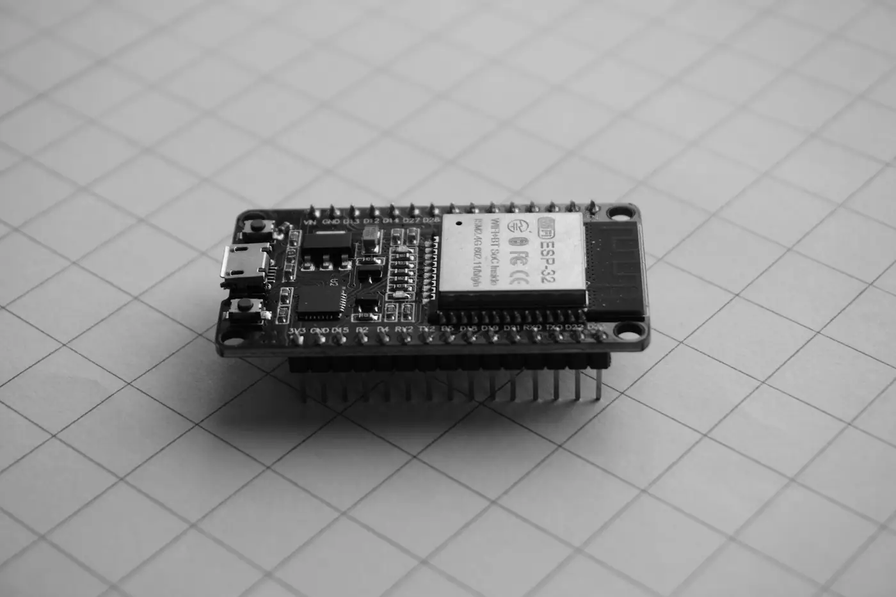

Hardware
Low-power wireless sensor node
A battery sensor that went from 3 days to 6 weeks on one charge.
- No public link.

By the numbers
- 3 days to 6 weeksbattery life on one 18650 cell
- 60 sbetween reads
- 2layer board
What I did
- Stretched battery life from 3 days to 6 weeks on one 18650 cell.
- The ESP32 sleeps between reads, one every 60 seconds.
- Wrote the C firmware and drew a 2-layer board in KiCad.
- Found a missing pull-up resistor with an oscilloscope.